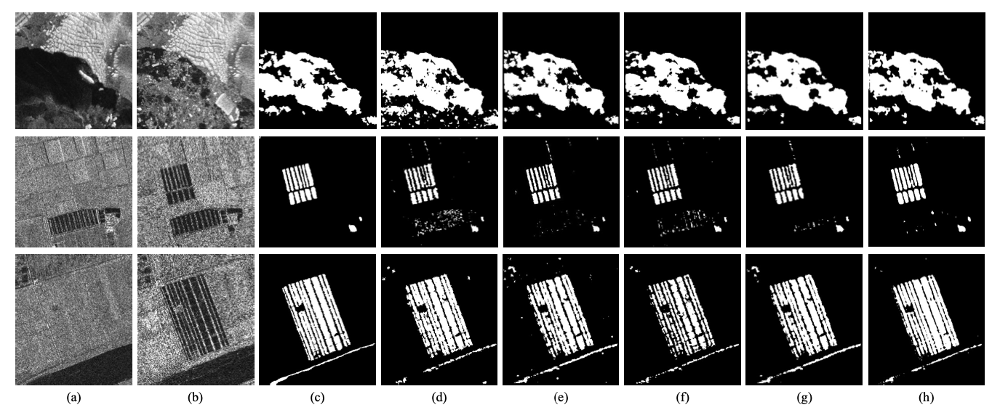
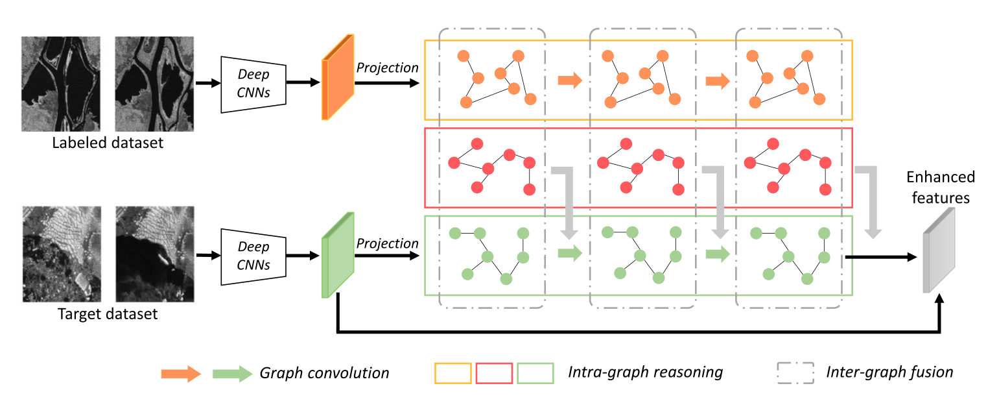
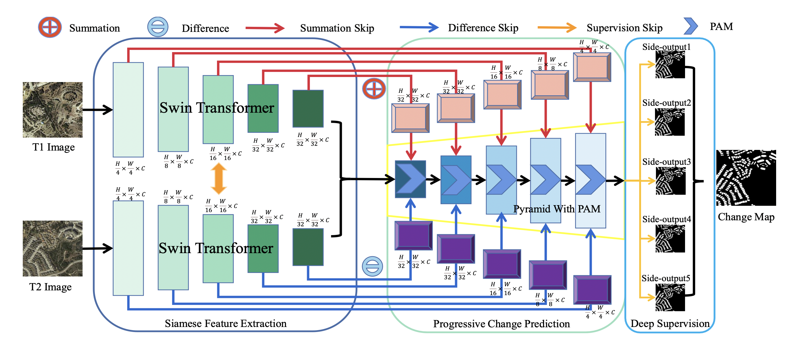
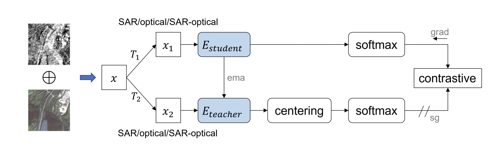

Revisión papers
En está sección se registrará los aspectos generales de la revisión bibliográfica a modo de conocer el estado del arte en técnicas de identificación de cambios en imagenes satelitales utilizado redes neuronales convolucionales.
Principales Desafíos:
- Ruidos Moteado (Gao et al. 2021)
- Sesibilidad a la Deformación (Gao et al. 2021)
- Cantidad de Muestras de Entrenamiento de Cambios (J. Wang et al. 2022)
- Limitada capacidad de representación de las características visuales extraídas (Yan, Wan, and Zhang 2022)
Posibles Soluciones
Detección de Cambios con Imágenes Radar
Ms-CapsNet
SAR Image Change Detection Based on Multiscale Capsule Network (Gao et al. 2021)
- Resumen:
- Los métodos tradicionales de detección de cambios en imágenes de radar de apertura sintética basados en redes neuronales convolucionales (CNN) se enfrentan a los retos del ruido de moteado y la sensibilidad a la deformación. Para mitigar estos problemas, propone una red de cápsulas multiescala (Ms-CapsNet) para extraer la información discriminativa entre los píxeles cambiados y los no cambiados. Por un lado, el módulo de cápsula multiescala se emplea para explotar la relación espacial de las características. Por lo tanto, se pueden conseguir propiedades equivariantes agregando las características de diferentes posiciones. Por otro lado, se ha diseñado un módulo de convolución de fusión adaptativa (AFC) para la Ms-CapsNet propuesta. Se pueden capturar características semánticas más altas para las cápsulas primarias. Las características extraídas por el módulo AFC mejoran significativamente la robustez frente al ruido de moteado. La eficacia de la Ms-CapsNet propuesta se verifica en tres conjuntos de datos SAR reales. Los experimentos de comparación con cuatro métodos de vanguardia demuestran la eficacia del método propuesto.
- Index Terms:
-
Change detection, multiscale capsule network, synthetic aperture radar, deep learning.

Resultados y Análisis de Experimentos.

Graph-Based Knowledge Supplement
Change Detection From Synthetic Aperture Radar Images via Graph-Based Knowledge Supplement Network (J. Wang et al. 2022)
- Resumen:
- La detección de cambios en las imágenes del radar de apertura sintética (SAR) es una tarea vital pero difícil en el campo del análisis de imágenes de teledetección. La mayoría de los trabajos anteriores adoptan un método auto-supervisado que utiliza muestras pseudo-etiquetadas para guiar el entrenamiento y las pruebas subsecuentes. Sin embargo, las redes profundas suelen requerir muchas muestras de alta calidad para la optimización de los parámetros. El ruido en las pseudo-etiquetas afecta inevitablemente al rendimiento final de la detección de cambios. Para resolver el problema, proponemos una red de complemento de conocimiento basada en grafos (GKSNet). Para ser más específicos, extraemos información discriminatoria del conjunto de datos etiquetados existente como conocimiento adicional, para suprimir hasta cierto punto los efectos adversos de las muestras ruidosas. A continuación, diseñamos un módulo de transferencia de grafos para destilar información contextual de forma atenta desde el conjunto de datos etiquetados al conjunto de datos de destino, lo que permite salvar la correlación de características entre los conjuntos de datos. Para validar el método propuesto, realizamos amplios experimentos con cuatro conjuntos de datos de SAR, que demostraron la superioridad de la GKSNet propuesta en comparación con varias líneas de base del estado de la técnica.
- Index Terms:
-
Change detection, graph dependency fusion, knowledge supplement network, synthetic aperture radar (SAR).

Fully Transformer Network for Change Detection of Remote Sensing Images (Yan, Wan, and Zhang 2022)
- Resumen:
- Recientemente, la detección de cambios (CD) de las imágenes de teledetección ha logrado un gran progreso con los avances del aprendizaje profundo. Sin embargo, los métodos actuales generalmente ofrecen regiones de CD incompletas y límites de CD irregulares debido a la limitada capacidad de representación de las características visuales extraídas. Para aliviar estos problemas, en este trabajo proponemos un novedoso marco de aprendizaje llamado Fully Transformer Network (FTN) para la CD de imágenes de teledetección, que mejora la extracción de características desde una vista global y combina características visuales de varios niveles de forma piramidal. Más concretamente, el marco propuesto utiliza en primer lugar las ventajas de los transformadores en el modelado de dependencias de largo alcance. Puede ayudar a aprender más características discriminativas de nivel global y obtener regiones completas de CD. A continuación, introducimos una estructura piramidal para agregar características visuales multinivel a partir de Transformers para mejorar las características. La estructura piramidal injertada con un Módulo de Atención Progresiva (PAM) puede mejorar la capacidad de representación de características con interdependencias adicionales a través de atenciones de canal. Por último, para entrenar mejor el marco, utilizamos el aprendizaje supervisado en profundidad con múltiples funciones de pérdida de límites. Amplios experimentos demuestran que nuestro método propuesto alcanza un nuevo rendimiento de vanguardia en cuatro puntos de referencia públicos de CD.

Index Terms: Fully Transformer Network, Change Detection, Remote Sensing Image.
Self-supervised Vision Transformers for Joint SAR-optical Representation Learning (Y. Wang, Albrecht, and Zhu 2022)
- Resumen:
- El aprendizaje autosupervisado (SSL) ha suscitado un gran interés en la teledetección y la observación de la Tierra debido a su capacidad para aprender representaciones independientes de la tarea sin necesidad de anotaciones humanas. Mientras que la mayoría de los trabajos existentes sobre SSL en teledetección utilizan columnas vertebrales ConvNet y se centran en una sola modalidad, nosotros exploramos el potencial de los transformadores de visión (ViTs) para el aprendizaje conjunto de representaciones SAR-ópticas. Basándonos en DINO, un algoritmo SSL de última generación que destila conocimiento de dos vistas aumentadas de una imagen de entrada, combinamos imágenes SAR y ópticas concatenando todos los canales en una entrada unificada. Posteriormente, enmascaramos aleatoriamente los canales de una modalidad como estrategia de aumento de datos. Durante el entrenamiento, el modelo se alimenta de pares de imágenes ópticas, SAR y SAR-ópticas para aprender representaciones internas e intra-modales. Los resultados experimentales que emplean el conjunto de datos BigEarthNet-MM demuestran las ventajas tanto de los ejes ViT como del algoritmo SSL multimodal propuesto DINO-MM.

Index Terms: Self-supervised learning, vision trans- former, multimodal representation learning
Detección de Cambios con Imágenes de Alta Resolución
DASNet
DASNet: Dual attentive fully convolutional siamese networks for change detection in high-resolution satellite images(Chen et al. 2021)
- Resumen:
- La detección de cambios es una tarea básica del procesamiento de imágenes por teledetección. El objetivo de la investigación es identificar la información de cambio de interés y filtrar la información de cambio irrelevante como factores de interferencia. Recientemente, el aumento del aprendizaje profundo ha proporcionado nuevas herramientas para la detección de cambios, que han dado resultados impresionantes. Sin embargo, los métodos disponibles se centran principalmente en la información de diferencia entre las imágenes de teledetección multitemporal y carecen de robustez ante la información de pseudocambio. Para superar la falta de resistencia de los métodos actuales a los pseudocambios, en este trabajo proponemos un nuevo método, a saber, las redes siamesas totalmente convolucionales de atención dual (DASNet), para la detección de cambios en imágenes de alta resolución. A través del mecanismo de atención dual, se capturan las dependencias de largo alcance para obtener representaciones de características más discriminantes para mejorar el rendimiento de reconocimiento del modelo. Además, la muestra desequilibrada es un problema grave en la detección de cambios, es decir, las muestras sin cambios son mucho más abundantes que las muestras con cambios, lo que constituye una de las principales razones de los pseudocambios. Proponemos la pérdida contrastiva ponderada de doble margen para abordar este problema, castigando la atención a los pares de características sin cambios y aumentando la atención a los pares de características con cambios. Los resultados experimentales de nuestro método en el conjunto de datos de detección de cambios (CDD) y en el conjunto de datos de detección de cambios en edificios (BCDD) demuestran que, en comparación con otros métodos de referencia, el método propuesto consigue mejoras máximas del 2,9% y el 4,2%, respectivamente, en la puntuación F1. Nuestra implementación de PyTorch está disponible en https://github.com/lehaifeng/DASNet.
- Index Terms:
-
Change detection, high-resolution images, dual attention, Siamese network, weighted double-margin contrastive loss.